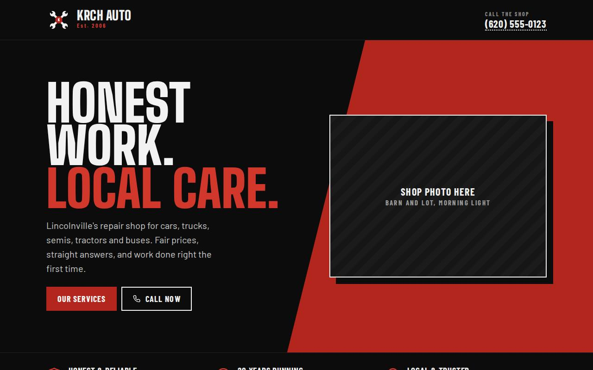
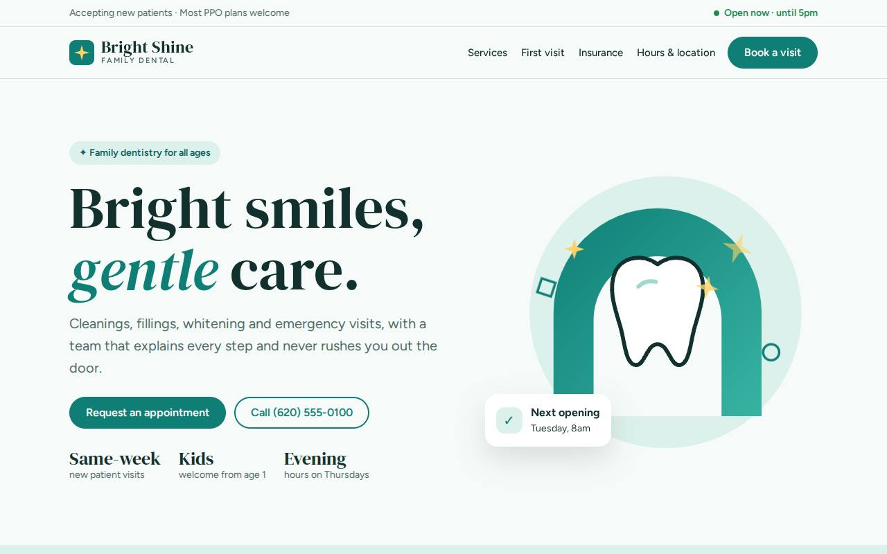
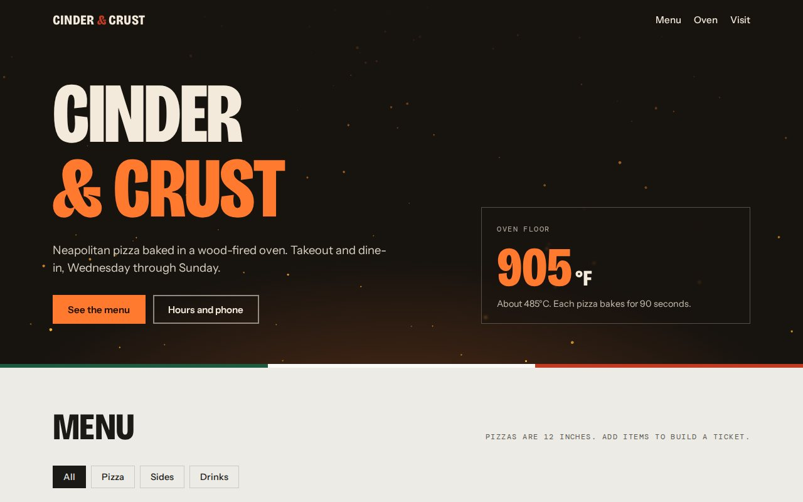
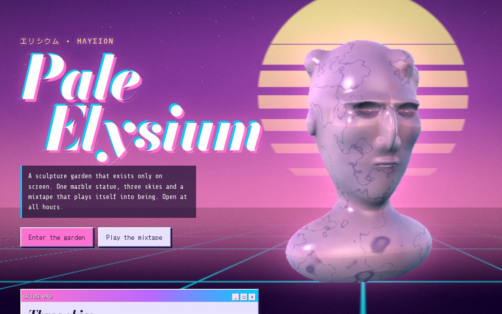
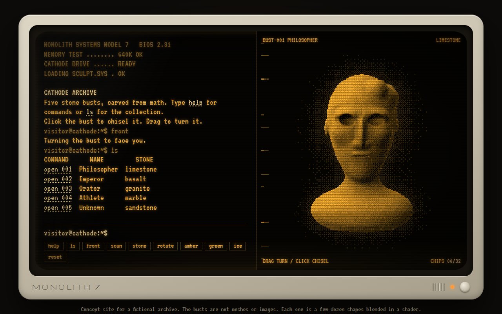
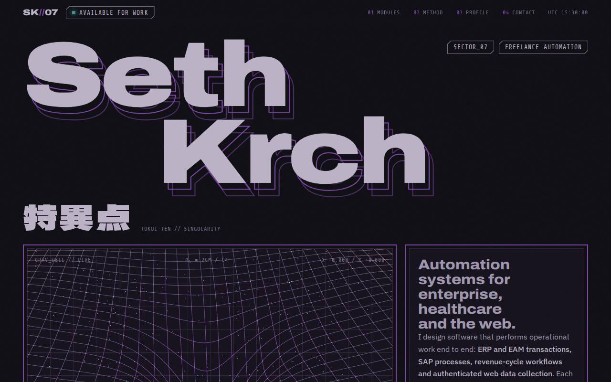
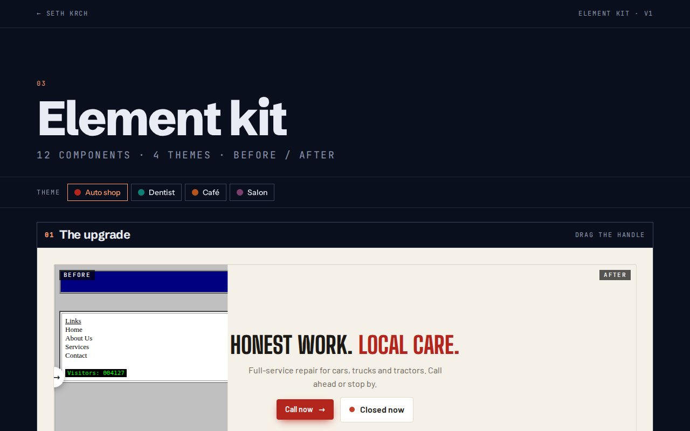

01 / 07ConceptKrch Auto (opens the site)
Auto repairSite for a rural auto repair shop. Services, hours, phone and directions on one page.
07 projects
03 categories
Sites and experiments built so far, grouped by type. Each card opens the full site.
One-page sites for small local businesses. Concepts and demos use fictional details unless noted.

01 / 07ConceptSite for a rural auto repair shop. Services, hours, phone and directions on one page.

02 / 07DemoDemo for a fictional dental practice. Services, how a first visit works, insurance help and a callback form.

03 / 07ConceptWood-fired pizzeria. A menu that adds up an order ticket, and opening hours that highlight today.
Pages built to see how far a browser can go. The statues are not images or 3D models. Each is drawn live by a shader.

04 / 07ConceptA marble bust under three sky palettes. Sliders reshape the face, and the mixtape is synthesized in the browser.

05 / 07ConceptFive dithered stone busts on a CRT screen. Type commands, drag to turn the bust, click to chisel it.
Work that is not a client site: a portfolio and a set of reusable interface parts.

06 / 07LivePortfolio for automation work: browser automation, HTTP scripting, SAP and medical billing workflows.

07 / 07LiveInterface parts shown before and after, themed for an auto shop, dentist, cafe or salon.